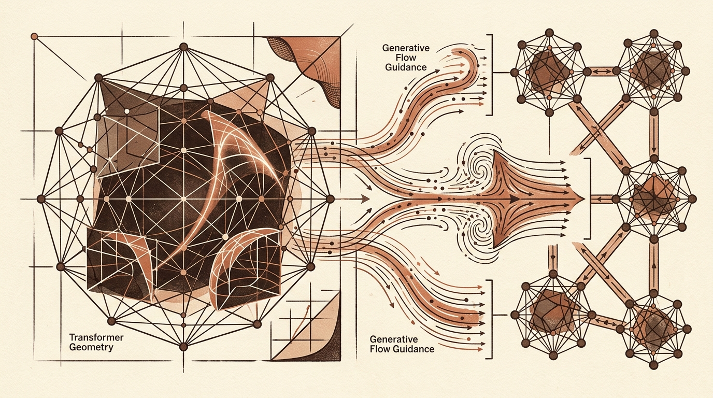

Daily digest
-
Towards Data Science
Managing the Operational Realities and Maintenance Taxes of Production AI
As AI agents and large language models become integrated into core software engineering workflows, developers face new failure modes in code generation and system stability. Autonomous coding tools frequently introduce…
-

arXiv cs.LG
Research Advances in Transformer Geometry, Generative Flow Guidance, and Distributed Learning
Recent research in machine learning highlights structural constraints and specialized optimization techniques designed to make model training and inference more efficient. Key architectural advances focus on training…